◊
◊
◊
◊
— FROM SHANGHAI, WITH LOVE —
· · · · · · · · ·
Postcards from Shanghai
◊
上 海 か ら の 手 紙
来 自 上 海 的 明 信 片
· · · · · · · · ·
りか
と
たいらん
春の終わり、初夏のはじまり。
街灯と、ネオンと、突然の雨と、
手のひらに咲いた一輪のバラと。
——四日間、二人きりの上海。
街灯と、ネオンと、突然の雨と、
手のひらに咲いた一輪のバラと。
——四日間、二人きりの上海。
春末,初夏。
街灯,霓虹,骤雨,
还有掌心里那一支盛开的玫瑰。
——四天,只属于我们的上海。
街灯,霓虹,骤雨,
还有掌心里那一支盛开的玫瑰。
——四天,只属于我们的上海。
— our story begins —
— Day One —
The First Evening
夕暮れから夜へ
从黄昏到深夜
May 2nd · Saturday
— Act I —
日本、出発まで
日暮里で、彼女を待つ
在日暮里等她
TOKYO
May 2
2026

No 01
— The arrival —
11:00 AM
11時、日暮里駅。
スカイライナーの改札の前で、彼女を待つ。
改札を抜けて出てきた時の、あの笑顔。
旅は、ここから始まった。
スカイライナーの改札の前で、彼女を待つ。
改札を抜けて出てきた時の、あの笑顔。
旅は、ここから始まった。
11点,日暮里站。
在天空特快的检票口前等她。
看她推着行李笑着出现的那一刻——
我想,旅行就从这里开始了。
在天空特快的检票口前等她。
看她推着行李笑着出现的那一刻——
我想,旅行就从这里开始了。
比心がズレていた
没对上的比心
NARITA
May 2
2026

No 02
— Almost a heart —
12:30 PM
撮ろうとしたら、なんとなく比心したくなって、
そのまま指を合わせた。
後で写真を見たら、ちゃんと合ってなかった。
でも、それも可愛かった。
そのまま指を合わせた。
後で写真を見たら、ちゃんと合ってなかった。
でも、それも可愛かった。
拍照拍着拍着,突然想比个心。
当下也没看,就这么比了。
后来翻照片才发现,两个人手势根本对不上。
但那张歪歪的心,反而最像我们。
当下也没看,就这么比了。
后来翻照片才发现,两个人手势根本对不上。
但那张歪歪的心,反而最像我们。
— Act II —
上海、街へ
包子で小腹つなぎ
机场的包子
PVG
May 2
2026

No 03
— First bite —
5:20 PM
浦東に着いて、まずお腹が空いた。
空港の水煎包。
「中国に来たね」って、ようやく実感した。
空港の水煎包。
「中国に来たね」って、ようやく実感した。
一落地,先饿了。
机场里找到一家水煎包。
她低头吃东西的样子,让我突然反应过来——
我们真的到上海了。
机场里找到一家水煎包。
她低头吃东西的样子,让我突然反应过来——
我们真的到上海了。
地下鉄で、路線図を読みながら
地铁上,看着线路图
LINE 2
May 2
2026

No 04
— わかりやすい —
6:00 PM
浦東から人民広場まで、地下鉄で70分。
路線図を見ながら、駅名の読み方を教えていた。
「2号線は、東京の総武線みたいなもの」って言ったら、
「わかりやすい」って彼女は笑った。
急に、隣の彼女を撮りたくなった。
路線図を見ながら、駅名の読み方を教えていた。
「2号線は、東京の総武線みたいなもの」って言ったら、
「わかりやすい」って彼女は笑った。
急に、隣の彼女を撮りたくなった。
从浦东到人民广场,地铁要 70 分钟。
一路看着线路图,教她每个站怎么念。
我说"2 号线就像东京的总武线",
她说"わかりやすい",笑得很开心。
然后我突然就想拍一张她。
一路看着线路图,教她每个站怎么念。
我说"2 号线就像东京的总武线",
她说"わかりやすい",笑得很开心。
然后我突然就想拍一张她。
— A Walk Down Nanjing Road —

19時20分、南京路。
ホテルのすぐ外が、もう繁華街だった。
人、人、人。ネオン、ネオン、ネオン。
ホテルのすぐ外が、もう繁華街だった。
人、人、人。ネオン、ネオン、ネオン。
19点20分,南京路。
一出酒店就是步行街。
满街都是人,满街都是灯。
一出酒店就是步行街。
满街都是人,满街都是灯。
— Act III —
上海、夜の街で
☾
不意のバラ、不意のプロポーズ
突如其来的玫瑰
NJ RD
May 2
2026

No 06a
— On the street —
8:00 PM
この数日、ずっと花屋を探していた。
彼女にバラを贈りたかったから。
信号待ちのとき、知らないおばさんが寄ってきて、
「お嬢さん、綺麗すぎる。この花、あげるよ」
って、僕の手にバラを押し付けた。
——ただでもらうわけにはいかない、と言って、お金を渡した。
彼女にバラを贈りたかったから。
信号待ちのとき、知らないおばさんが寄ってきて、
「お嬢さん、綺麗すぎる。この花、あげるよ」
って、僕の手にバラを押し付けた。
——ただでもらうわけにはいかない、と言って、お金を渡した。
这几天一直在想,上海哪里能买到花。
想送她一束玫瑰。
等红灯的时候,一位卖花阿姨突然走过来,
把花往我手里一塞——
"小伙子,你女朋友太好看了,这束花送给你。"
——这不能白要啊,必须付钱。
想送她一束玫瑰。
等红灯的时候,一位卖花阿姨突然走过来,
把花往我手里一塞——
"小伙子,你女朋友太好看了,这束花送给你。"
——这不能白要啊,必须付钱。
HOTEL
May 2
2026

No 06b
— Don't let go —
8:30 PM
彼女に渡したら、すごく嬉しそうに笑った。
「えっ、急にプロポーズするの?」
「これ、まだプロポーズじゃないからね」
「えっ、急にプロポーズするの?」
「これ、まだプロポーズじゃないからね」
把花递给她的时候,她笑得藏都藏不住。
她笑着说:"欸,是要プロポーズ了吗?"
我也笑:"别急,这还不是プロポーズ哦。"
她笑着说:"欸,是要プロポーズ了吗?"
我也笑:"别急,这还不是プロポーズ哦。"
二本目の傘は使わなかった
没用上的第二把伞
NJ RD
May 2
2026

No 07
— One umbrella, two of us —
8:20 PM
傘は二本、ちゃんと持って出てきた。
でも、結局一本しか開かなかった。
二人なら、それで足りた。
でも、結局一本しか開かなかった。
二人なら、それで足りた。
其实带了两把伞。
但最后只撑了一把。
两个人嘛,一把就够了。
但最后只撑了一把。
两个人嘛,一把就够了。
冷えピタ、ようやく
终于贴上冷ぴた

No 08
— her —
8:40 PM

No 09
— him —
8:40 PM
ネットで番号を取って、4時間待った。
ようやく順番が来た時、
店員さんが冷えピタを貼ってくれて、
彼女は嬉しそうに、子供みたいに笑っていた。
——彼女がずっと来たかったお店。
店名「很久以前」より、「冷えピタの店」の方が覚えやすい。
僕にも、一枚。
ようやく順番が来た時、
店員さんが冷えピタを貼ってくれて、
彼女は嬉しそうに、子供みたいに笑っていた。
——彼女がずっと来たかったお店。
店名「很久以前」より、「冷えピタの店」の方が覚えやすい。
僕にも、一枚。
网上排号,整整等了 4 个小时。
终于轮到我们的时候,
店员把冷贴往她额头上一贴——
她开心地像个孩子
这家店是她选的、非常想来。
比起店名很久以前,代号冷贴更好记啊
然后我也被贴了一片。
终于轮到我们的时候,
店员把冷贴往她额头上一贴——
她开心地像个孩子
这家店是她选的、非常想来。
比起店名很久以前,代号冷贴更好记啊
然后我也被贴了一片。
体調があまり良くなかった、それでも
虽然身体没在状态,但是
黄浦区
May 2
2026

No 10
— おいしい! —
9:20 PM
その日、彼女は少し頭が痛かった。
肉はあまり食べられなくて、
野菜と、フルーツと、デザートばかり頼んだ。
焼きとうもろこしの粒は、彼女にとって初めてで、
「おいしい!」って、はっきり声を上げた。
串焼きはほとんど残ってしまって、明日の朝の分にした。
——元気な彼女と、もう一回来たい店。
肉はあまり食べられなくて、
野菜と、フルーツと、デザートばかり頼んだ。
焼きとうもろこしの粒は、彼女にとって初めてで、
「おいしい!」って、はっきり声を上げた。
串焼きはほとんど残ってしまって、明日の朝の分にした。
——元気な彼女と、もう一回来たい店。
那天她有点头疼。
肉吃不太下,
于是点了一桌的蔬菜、水果、还有甜品。
她第一次吃烤玉米粒,
"好吃!"眉头舒展——确实挺好吃的。
串吃不完,打包了,第二天的早饭。
只是有点可惜——下次状态好的时候,还想再来一次。
肉吃不太下,
于是点了一桌的蔬菜、水果、还有甜品。
她第一次吃烤玉米粒,
"好吃!"眉头舒展——确实挺好吃的。
串吃不完,打包了,第二天的早饭。
只是有点可惜——下次状态好的时候,还想再来一次。
帰り道のタクシー、眠る彼女
出租车里睡着的她
SHANGHAI
May 2
2026

No 11
— good night —
10:30 PM
食べ終わったのが、もう22時半。
タクシーの中で、彼女はいつの間にか寝ていた。
信号の赤が、彼女の頬に映って——
起こさないように、そっとシャッターを切った。
タクシーの中で、彼女はいつの間にか寝ていた。
信号の赤が、彼女の頬に映って——
起こさないように、そっとシャッターを切った。
吃完已经是22:30了。
出租车里,她靠着座椅就睡着了。
红绿灯的光打在她脸上。
我没敢出声,只是悄悄按下了快门。
出租车里,她靠着座椅就睡着了。
红绿灯的光打在她脸上。
我没敢出声,只是悄悄按下了快门。
— Day Two —
A Day in Costume
漢服の日、音楽の夜
穿越的一天,音乐的夜
May 3rd · Saturday
09:53
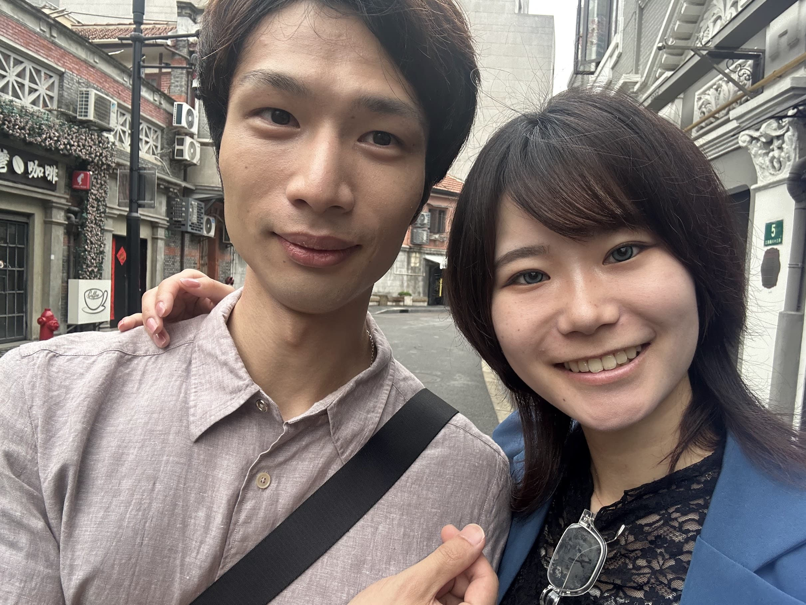
No 12·
— Ready —
9:53 AM
出発!
出发!
路傍の赤い花
路边的红花
TAXI
May 3
2026
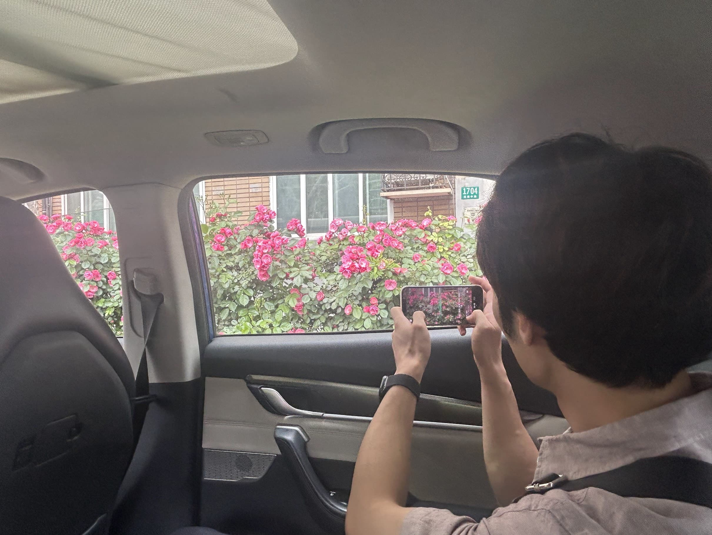
No 13
— 何の花だろう —
10:50 AM
タクシーの車窓越しに、
道端に咲く赤い花を、彼女が指さした。
「綺麗——これ何の花?」
微信の画像認識をかざして、調べてみる。
「えっ、微信ってこんな機能あるんだ」
——彼女の目が、ちょっと丸くなった。
道端に咲く赤い花を、彼女が指さした。
「綺麗——これ何の花?」
微信の画像認識をかざして、調べてみる。
「えっ、微信ってこんな機能あるんだ」
——彼女の目が、ちょっと丸くなった。
出租车窗外,
路边一丛红艳艳的花。
"好漂亮——这是什么花?",她好奇道
我打开微信扫一扫,识别了一下。
"诶?!微信还能识花?"
她的眼睛圆了一下——
像发现了新大陆。
路边一丛红艳艳的花。
"好漂亮——这是什么花?",她好奇道
我打开微信扫一扫,识别了一下。
"诶?!微信还能识花?"
她的眼睛圆了一下——
像发现了新大陆。
11:00
No 13·
— On the way —
11:00 AM
武康路へ、もうすぐ。
快到武康路了。
武康路、人波の中で
武康路,人山人海
WK RD
May 3
2026
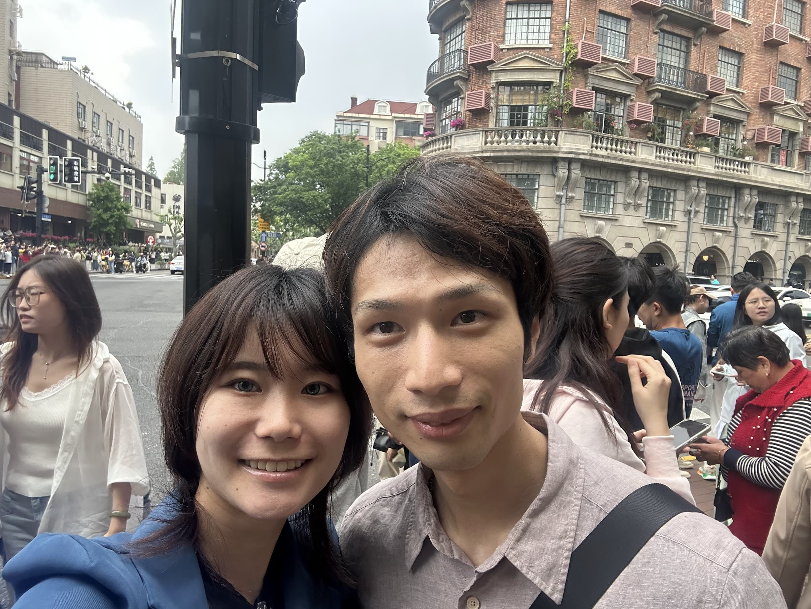
No 14
— Crowded street —
11:10 AM
— 11:15 · 网红墙 —
武康路に着いた瞬間、
「思ったより、ずっと人多いね」って彼女が笑った。
確かに、人、人、人。
でも彼女はずっと興奮していて、
一歩進むごとに何かを撮っていた。
「思ったより、ずっと人多いね」って彼女が笑った。
確かに、人、人、人。
でも彼女はずっと興奮していて、
一歩進むごとに何かを撮っていた。
一到武康路就傻眼了。
"比想象中的人多得多。"
街角红砖楼前挤满了游客。
但她一路兴奋得不得了,
走两步停一下,看见什么都想拍。
"比想象中的人多得多。"
街角红砖楼前挤满了游客。
但她一路兴奋得不得了,
走两步停一下,看见什么都想拍。
— Act II —
昼、洋食と熊と漢服と
街角の上海家庭料理
街角的本帮菜
LUNCH
May 3
2026
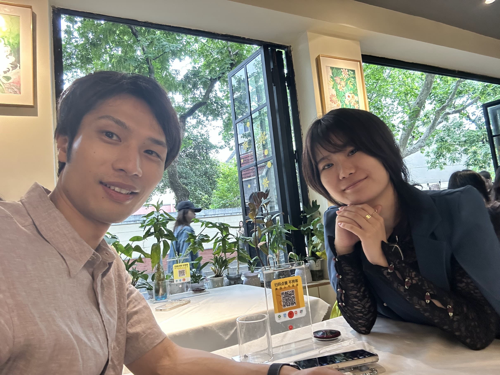
No 15
— Her pick —
1:00 PM
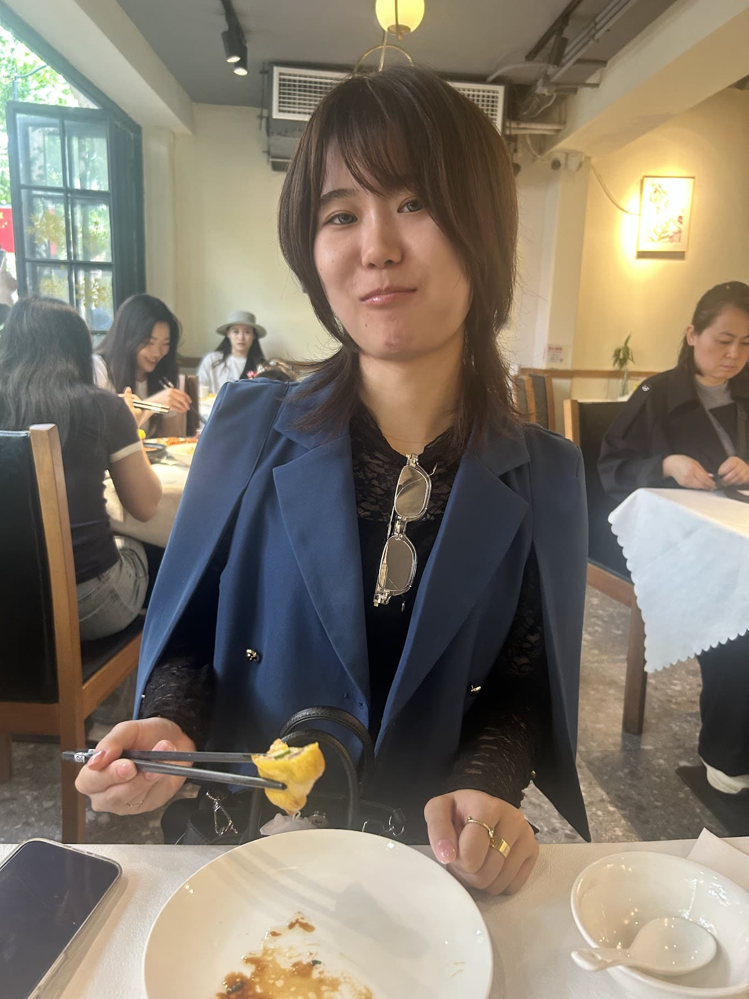
— ......どうかな? —
ランチは彼女が選んだ店、上海の本帮菜。
皮蛋に初挑戦、最初はちょっと身構えてから、
「あ、意外と好き」って。
蒸した魚を一口食べて、
「これ、日本にもあったらいいのに」
皮蛋に初挑戦、最初はちょっと身構えてから、
「あ、意外と好き」って。
蒸した魚を一口食べて、
「これ、日本にもあったらいいのに」
中午这家店是她选的,上海本帮菜。
她第一次挑战皮蛋,
试探着咬了一口,"诶,挺好吃的。"
那道清蒸鱼她也夸了几次,
"这种做法,日本也有就好了。"
她第一次挑战皮蛋,
试探着咬了一口,"诶,挺好吃的。"
那道清蒸鱼她也夸了几次,
"这种做法,日本也有就好了。"
13:05
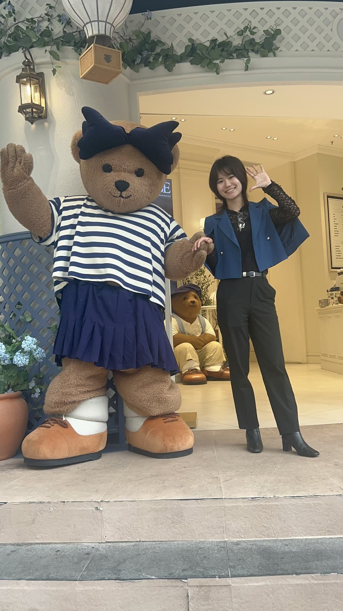
No 15·
— 大熊と —
1:05 PM
クマちゃんを迎えに行く前に、まずは大きい子に挨拶。
去接小熊之前,先跟大的打个招呼。
名物のクマ、ようやく
小熊咖啡,名物的熊
ANFU RD
May 3
2026
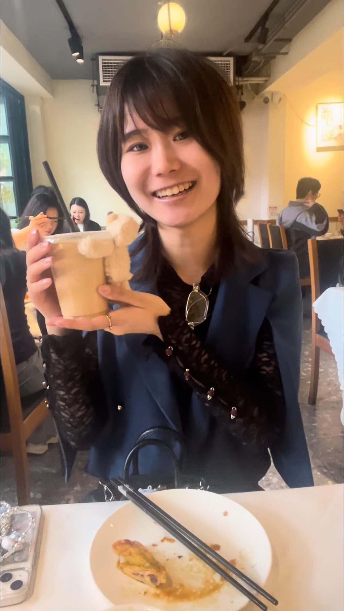
No 16
— Bear got home —
1:10 PM
13DE MARZO CAFE。
「このクマ、可愛すぎる!」
飲み物より、ぬいぐるみが主役。
受け取るやいなや、彼女はそのクマを
自分のバッグにくっつけた。
——これ以上ないくらい似合ってた。
「天才じゃん!」
「このクマ、可愛すぎる!」
飲み物より、ぬいぐるみが主役。
受け取るやいなや、彼女はそのクマを
自分のバッグにくっつけた。
——これ以上ないくらい似合ってた。
「天才じゃん!」
13DE MARZO CAFE。
"这只小熊太可爱了!"
——奶茶反倒成了配角。
拿到手就直接挂上了包,
像本来就该长在那里。
"你真是个天才!"
"这只小熊太可爱了!"
——奶茶反倒成了配角。
拿到手就直接挂上了包,
像本来就该长在那里。
"你真是个天才!"
シェア自転車で、次の場所へ
骑共享单车去下一站
CYCLE
May 3
2026
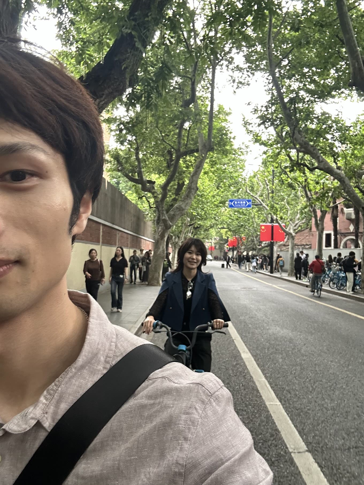
No 17
— Locals now —
2:00 PM
「ローカル体験、ちょっとしてみる？自転車、乗れるよね？」
「誰に向かって言ってるの」
並木道、緑の影、街の風。
——観光どころか、もう街の中に溶け込んでる。
「誰に向かって言ってるの」
並木道、緑の影、街の風。
——観光どころか、もう街の中に溶け込んでる。
"来体验一下大家的日常,会骑自行车吧?"
"看不起谁呢"
法国梧桐的绿荫一格一格从头顶掠过。
——这下深度融入当地了。
"看不起谁呢"
法国梧桐的绿荫一格一格从头顶掠过。
——这下深度融入当地了。
メイクアップ、目を奪われた瞬間
妆造完成,惊艳了彼此
STUDIO
May 3
2026
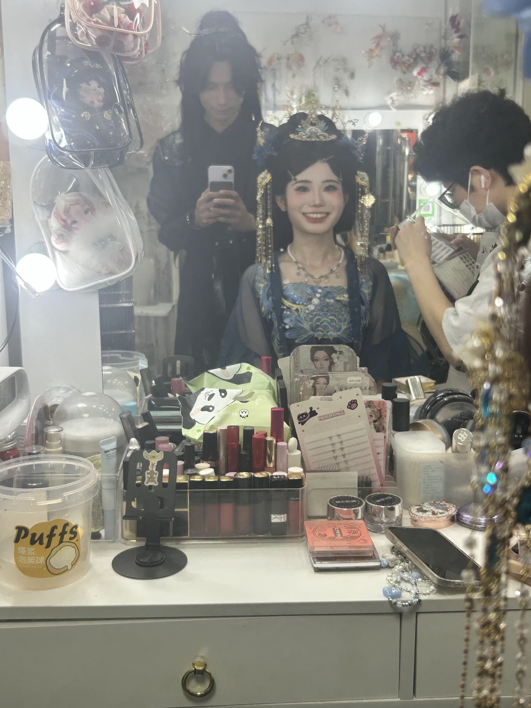
No 18
— めっちゃ可愛い! —
3:40 PM
自分のメイクが終わったあと、彼女のところへ歩いていった。
ちょうど、最後の仕上げの瞬間。
鏡の中の彼女と、目が合った。
「めっちゃ可愛い!」
「かっこいい!」
ちょうど、最後の仕上げの瞬間。
鏡の中の彼女と、目が合った。
「めっちゃ可愛い!」
「かっこいい!」
我的妆先一步完成,
走过去看她。
正赶上最后收尾那一下。
镜中的她抬起头,眼神对上。
"太漂亮了吧!"
"太帅了吧!"
走过去看她。
正赶上最后收尾那一下。
镜中的她抬起头,眼神对上。
"太漂亮了吧!"
"太帅了吧!"
換装後、最初の一枚
换装后,第一张合影
STUDIO
May 3
2026
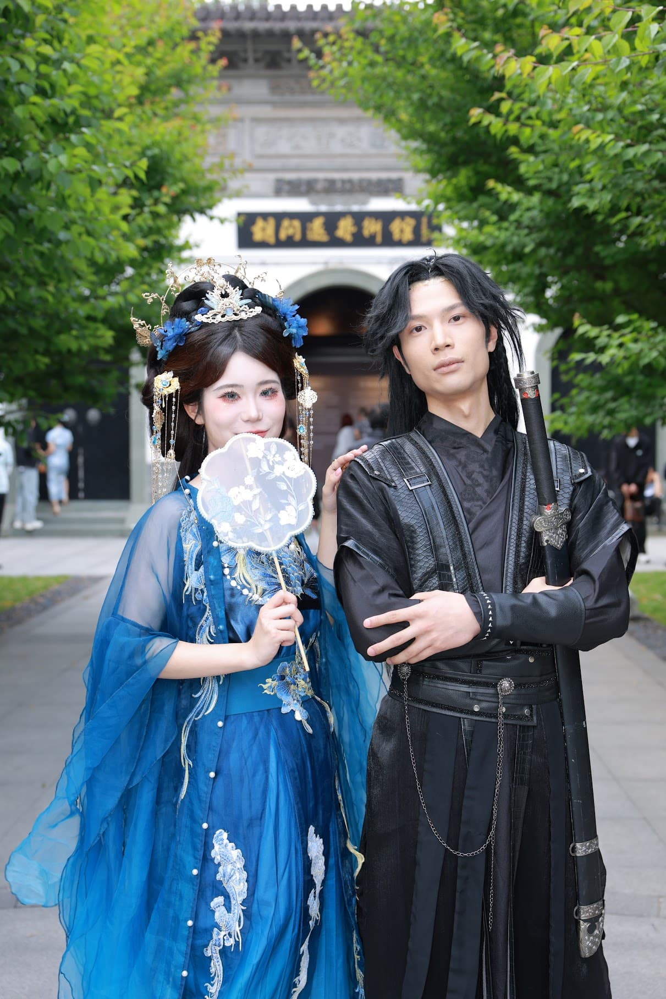
No 19
— First frame —
3:53 PM
撮影開始、最初の一枚。
——別世界の入り口に、二人で。
——別世界の入り口に、二人で。
拍摄开始的第一张合影。
——一起踏进另一个世界。
——一起踏进另一个世界。
写真を確認
在确认刚才的照片
STUDIO
May 3
2026
No 20
— Checking —
3:59 PM
「こう、肩をもう少し下げて、
袖を流すように。」
「OK~」
袖を流すように。」
「OK~」
“像这样,肩再低一些,
然后让袖子飘逸一点”
“OK~”
然后让袖子飘逸一点”
“OK~”
屋外で、自撮り
屋外的一张自拍
OUTSIDE
May 3
2026
No 21
— Just her —
4:00 PM
ありふれた、ただの自撮り一枚。
なのに、目を逸らすのが、
ちょっとだけ、難しかった。
なのに、目を逸らすのが、
ちょっとだけ、難しかった。
明明应该是平平无奇的一张自拍
想挪开眼神却格外的难。
想挪开眼神却格外的难。
黒装束、扇を広げて
黑衣展扇
SHOOT
May 3
2026
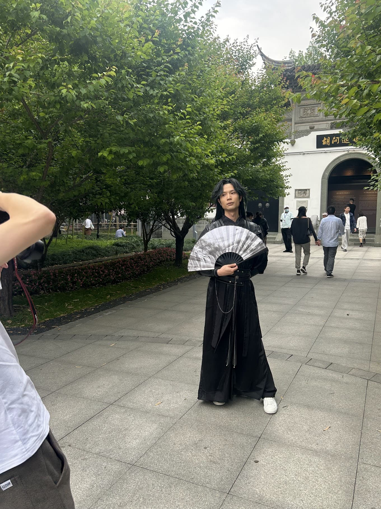
No 22
— Try harder —
4:00 PM
「もっと鋭い目で、借金取り立てるみたいに」って、カメラマンに言われた。
——演技って、想像以上に難しい。
——演技って、想像以上に難しい。
"眼神凶一点,感觉像我欠你钱一样"——摄影师如是说
——演戏没有想象中那么容易啊。
——演戏没有想象中那么容易啊。
プロのお仕事
这就叫专业
SHOOT
May 3
2026
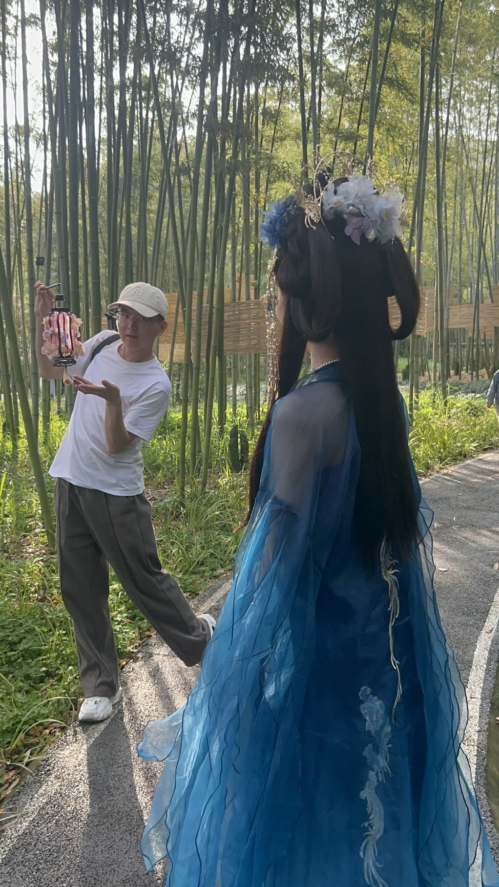
No 23
— Pro at work —
4:17 PM
カメラマンのお兄さんが、自らポーズを実演してくれた。
——男の人が妖艶にやり始めると、もう女性の出番はない。
さすが、プロ。
——男の人が妖艶にやり始めると、もう女性の出番はない。
さすが、プロ。
摄影师小哥示范姿势。
——果然男生妖娆起来,就没女生什么事了。
不愧是专业的。
——果然男生妖娆起来,就没女生什么事了。
不愧是专业的。
振り返り
回眸
BAMBOO
May 3
2026
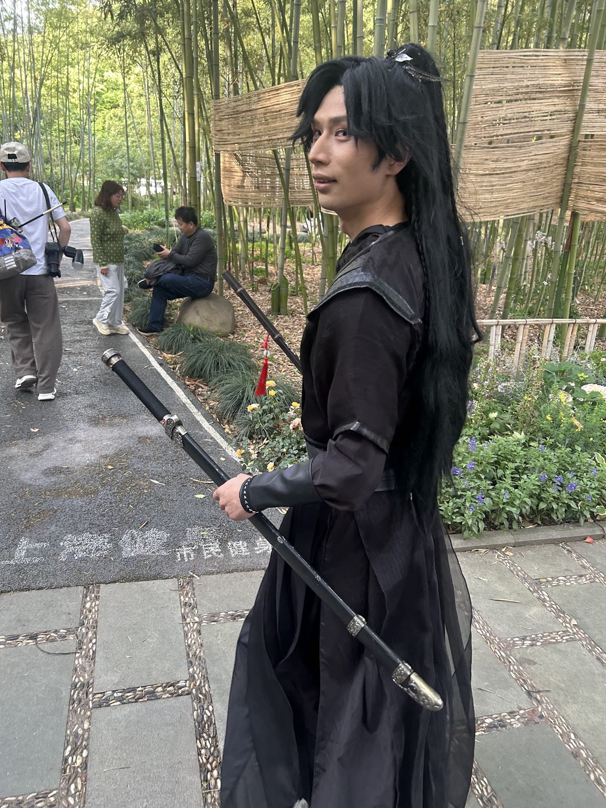
No 25
— Look back —
4:28 PM
振り返ると、彼女がそこにいた。
——彼女のレンズ越しに、僕。
——彼女のレンズ越しに、僕。
回过头,她在我身后。
——透过她的镜头,看见的我。
——透过她的镜头,看见的我。
16:55
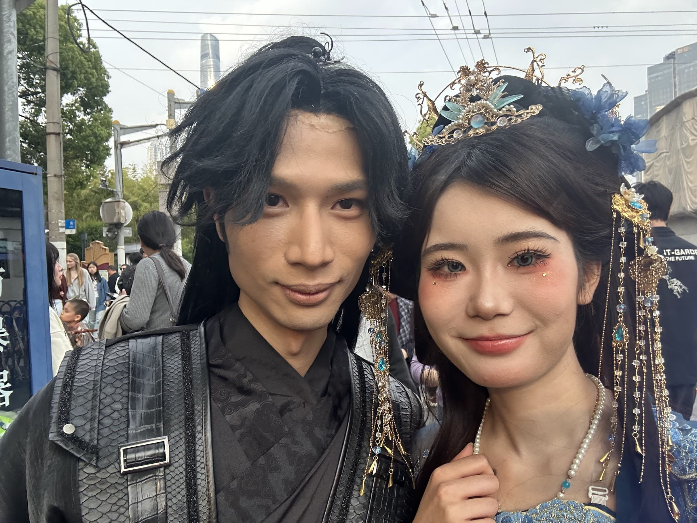
No 25·
— Moving on —
4:55 PM
次の場所へ。
转场途中。
廟会、絵巻物の中へ
庙会,华灯如昼
YU GARDEN
May 3
2026
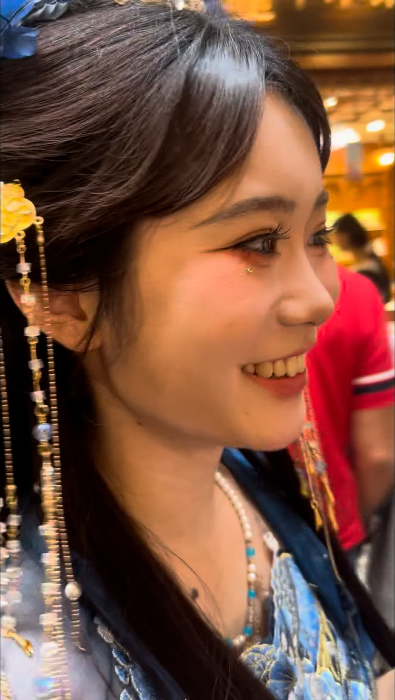
No 25
— 姐姐好漂亮 —
4:55 PM
漢服を着たまま、廟会へ。
提灯、刺繍、人々のざわめき。
彼女は、その空気にすっかり酔っていた。
——歩いていると、すれ違う子供たちが大きな声で
「お姉さん綺麗!」「綺麗——!」と何度も叫んでいた。
通訳して伝えると、彼女は嬉しそうに笑った。
——その瞬間、
彼女は、絵巻物の中の人だった。
提灯、刺繍、人々のざわめき。
彼女は、その空気にすっかり酔っていた。
——歩いていると、すれ違う子供たちが大きな声で
「お姉さん綺麗!」「綺麗——!」と何度も叫んでいた。
通訳して伝えると、彼女は嬉しそうに笑った。
——その瞬間、
彼女は、絵巻物の中の人だった。
穿着漢服走进庙会。
红灯笼、刺绣、人声鼎沸。
她完全沉醉在这个氛围里。
路上不时有小孩子大声喊:
"姐姐好漂亮!" "哇好漂亮!"
我翻译给她听,
她笑得很开心。
仿佛是从画里走出来的人。
红灯笼、刺绣、人声鼎沸。
她完全沉醉在这个氛围里。
路上不时有小孩子大声喊:
"姐姐好漂亮!" "哇好漂亮!"
我翻译给她听,
她笑得很开心。
仿佛是从画里走出来的人。
護衛のお仕事
护卫之责
YU GARDEN
May 3
2026
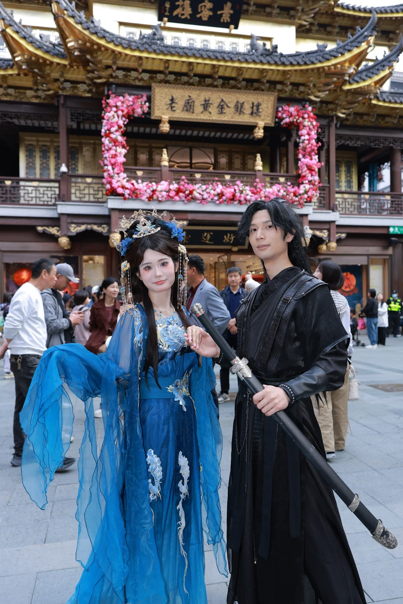
No 26
— My princess —
5:06 PM
老廟商場の前。
片手に刀を、もう片方の手で彼女の手を握って——
「お姫様を護らなきゃ」って、思った。
漢服の今日だけじゃなくて、これからもずっと。
片手に刀を、もう片方の手で彼女の手を握って——
「お姫様を護らなきゃ」って、思った。
漢服の今日だけじゃなくて、これからもずっと。
老庙商场前面,
一边握着长刀,
一边牵着她的手,
要好好保护这位公主。
今后也是。
一边握着长刀,
一边牵着她的手,
要好好保护这位公主。
今后也是。
蟹黄麺、お弁当タイム
蟹黄面,盒饭时间
DINNER
May 3
2026
No 27
— Bento break —
6:12 PM
衣装を脱いで、メイクはそのまま。
——撮影終わりの役者みたいに、一杯。
——撮影終わりの役者みたいに、一杯。
戏服换了但没卸妆。
——像收工后的演员,吃一碗面。
——像收工后的演员,吃一碗面。
— Act III —
夜、彼女のミュージカル
☾
自転車、夜の街を急ぐ
夜行的单车
NIGHT
May 3
2026
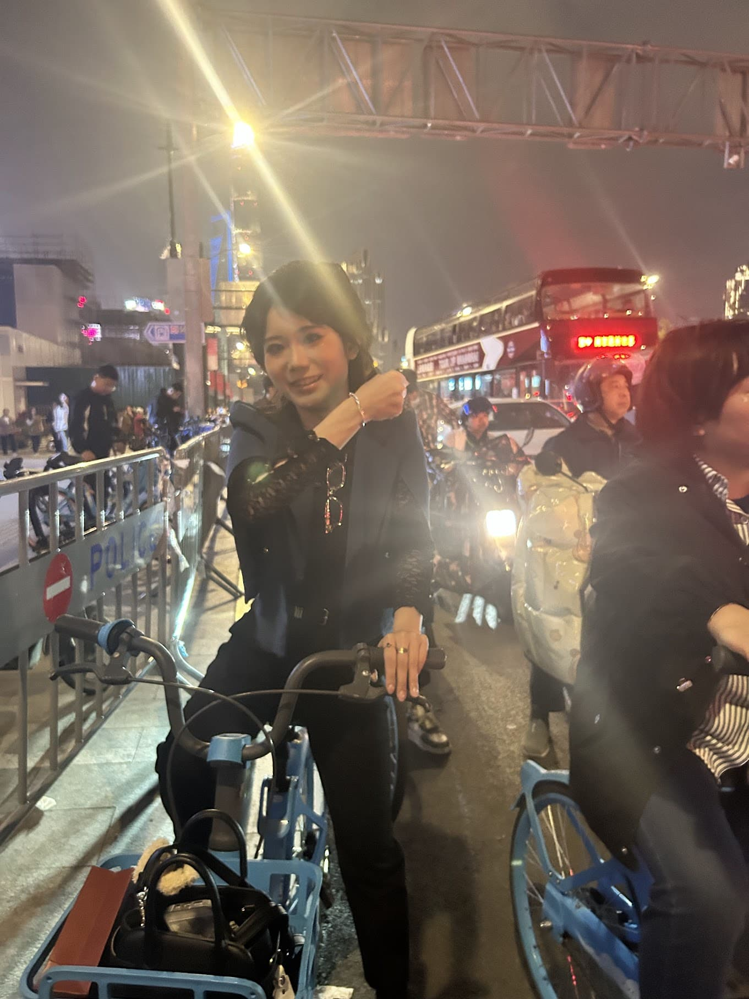
No 28
— Stolen frame —
7:09 PM
信号待ちの間に、ちょっと一枚。
——夜行途中の、ささやかな寄り道。
——夜行途中の、ささやかな寄り道。
等红灯的间隙,一张。
——去下一站途中,偷来的一帧。
——去下一站途中,偷来的一帧。
大世界、彼女のミュージカル
大世界,《时光代理人》音乐剧
19:30、大世界・時光劇場。
《时光代理人》のミュージカル。
彼女がめっちゃハマってる作品で、
今夜の公演を、ずっと楽しみにしていた。
《时光代理人》のミュージカル。
彼女がめっちゃハマってる作品で、
今夜の公演を、ずっと楽しみにしていた。
19:30,大世界・时光剧场。
《时光代理人》音乐剧开演。
这部她超喜欢,
今晚这场,她期待已久。
《时光代理人》音乐剧开演。
这部她超喜欢,
今晚这场,她期待已久。
No 29
— 一家三口 —
10:00 PM
No 30
— 陆光 —
10:04 PM
スター登場
明星登场
大世界
May 3
2026
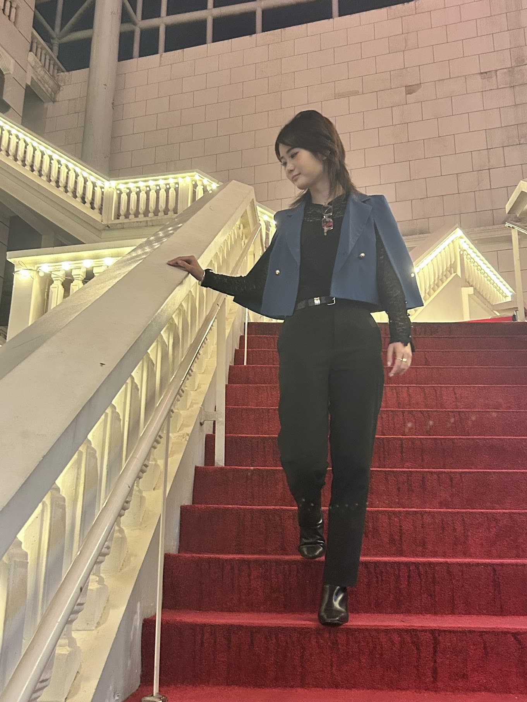
No 31
— She's here —
10:23 PM
「她来了、她来了!」
——レッドカーペットも、スターも、揃った。
開幕。
——レッドカーペットも、スターも、揃った。
開幕。
"她来了,她来了——"
——红毯有了,明星也有了。
开场吧。
——红毯有了,明星也有了。
开场吧。
赤い階段の上で
红楼梯上
大世界
May 3
2026
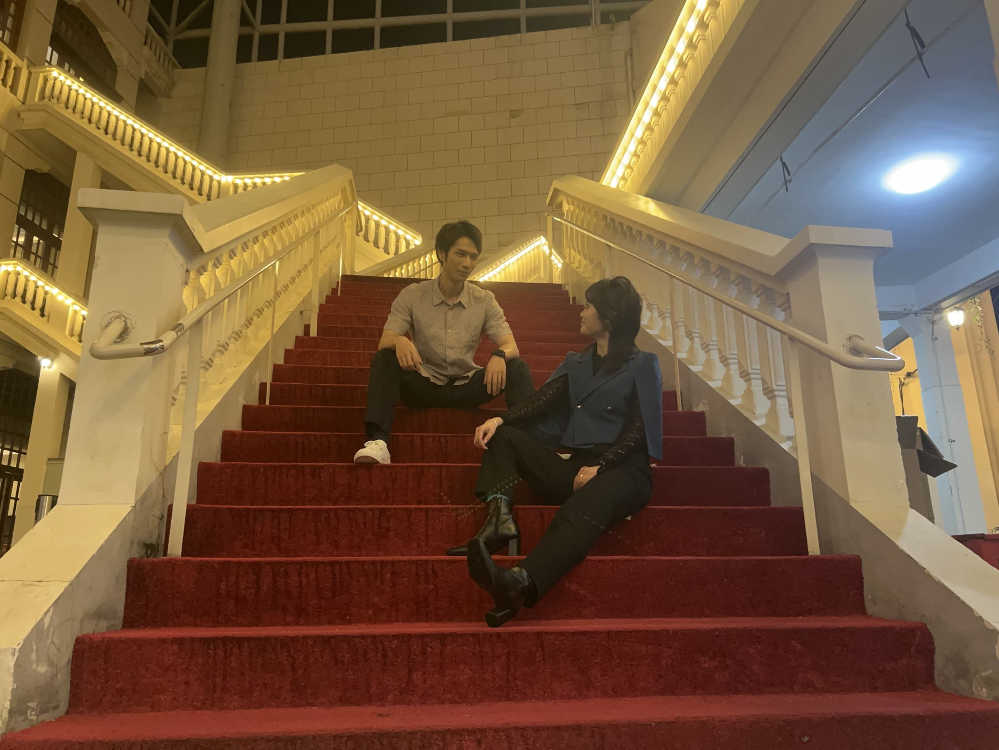
No 32
— Red stairs —
10:32 PM
舞台の外の人が、
いつの間にか、舞台の中の人に。
いつの間にか、舞台の中の人に。
戏外人,
不觉已成戏中人。
不觉已成戏中人。
二つの眼差し
两道目光
No 33
— 眼波如水 —
10:46 PM
No 34
— 正吃着呢 —
10:46 PM
暗いレストランの中、
彼女の視線が、こちらに止まっていた。
——そのまなざしは、夜の湖のように静かだった。
同じ瞬間、彼女のカメラは、僕の方へ。
——口いっぱいに何かを頬張る、僕。
ちょうど、いいバランス。
彼女の視線が、こちらに止まっていた。
——そのまなざしは、夜の湖のように静かだった。
同じ瞬間、彼女のカメラは、僕の方へ。
——口いっぱいに何かを頬張る、僕。
ちょうど、いいバランス。
餐厅的光线很暗。
——她的眼神停住,
像夜里一汪安静的水。
下一刻,她的镜头转向我——
正在毫无形象地啃着鸡翅
嗯,还挺搭的嘛。
——她的眼神停住,
像夜里一汪安静的水。
下一刻,她的镜头转向我——
正在毫无形象地啃着鸡翅
嗯,还挺搭的嘛。
化粧に、おやすみ
向妆容道一声晚安
HOTEL
May 4
2026
No 35
— Good night, beauty —
12:40 AM
鏡の前で、ぽつり。
「落とすの、ちょっと惜しいな」
——華やかな今日に、おやすみ。
「落とすの、ちょっと惜しいな」
——華やかな今日に、おやすみ。
她望着镜子里的自己,
"这么好看的妆,舍不得卸掉。"
——华丽的一天,晚安。
"这么好看的妆,舍不得卸掉。"
——华丽的一天,晚安。
— Day Three —
Tower, Shrine, Table
塔へ、聖地へ、円卓へ
上塔，巡礼，围桌
May 4th · Monday
— Act I —
朝、まだ眠い
寝ぼけまなこの、月曜
还没醒透的星期一
HOTEL
May 4
2026
No 36
— 寝ぼけ可愛い —
9:30 AM
「眠い……」
"彼女らしい"コーデで、彼女が、小さくつぶやく。
——こういうの、好きだったんだ、僕。
"彼女らしい"コーデで、彼女が、小さくつぶやく。
——こういうの、好きだったんだ、僕。
"困……"
一身女友风穿搭的她小声嘟囔着。
——原来我喜欢这种啊。
一身女友风穿搭的她小声嘟囔着。
——原来我喜欢这种啊。
朝食 or ジム？
吃早饭,还是去健身房
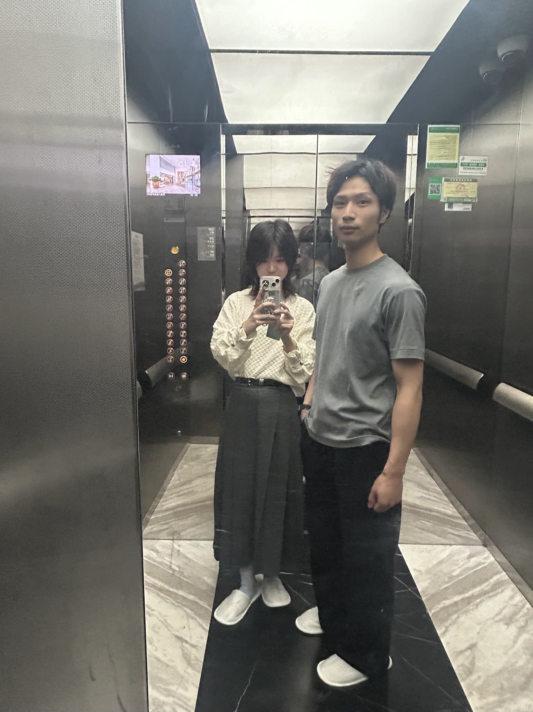
No 37
— 朝食派 vs ジム派 —
9:33 AM
朝食に、行くはずだった。
——なのに、どう見ても、ジム帰り。
——なのに、どう見ても、ジム帰り。
我们,是去吃早饭对吧?
——怎么看着,像要去健身房呢。
——怎么看着,像要去健身房呢。
知らない果物を、ひとくち
没吃过的水果,一小口
FRUIT
May 4
2026
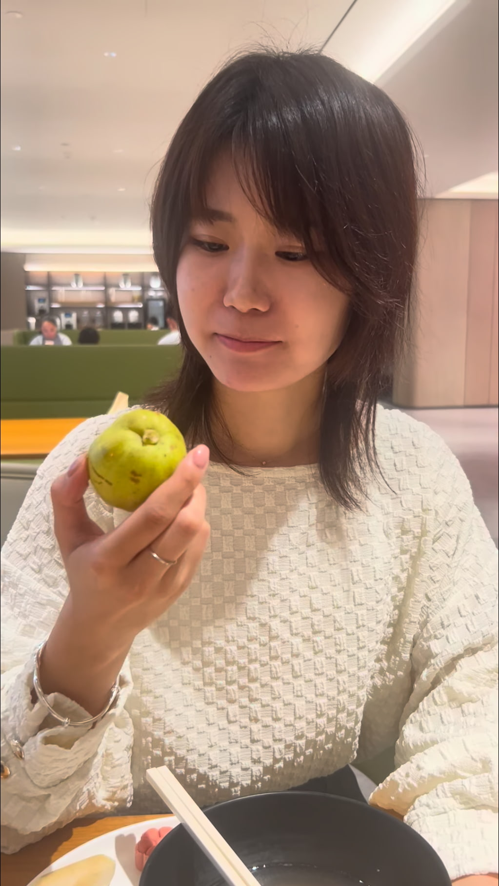
No 38
— 初めての味 —
10:00 AM
旅の楽しみのひとつ。
——彼女のまだ知らない味を、ひとつずつ、渡してあげる。
「うん、おいしい〜」
香梨の甘さが、表情に、ゆっくり、滲んでいく。
——彼女のまだ知らない味を、ひとつずつ、渡してあげる。
「うん、おいしい〜」
香梨の甘さが、表情に、ゆっくり、滲んでいく。
旅行里最好玩的事之一,
——把她没尝过的味道,一个一个,递给她。
"嗯好吃~"
香梨的甜,慢慢在她脸上晕开。
——把她没尝过的味道,一个一个,递给她。
"嗯好吃~"
香梨的甜,慢慢在她脸上晕开。
11:15
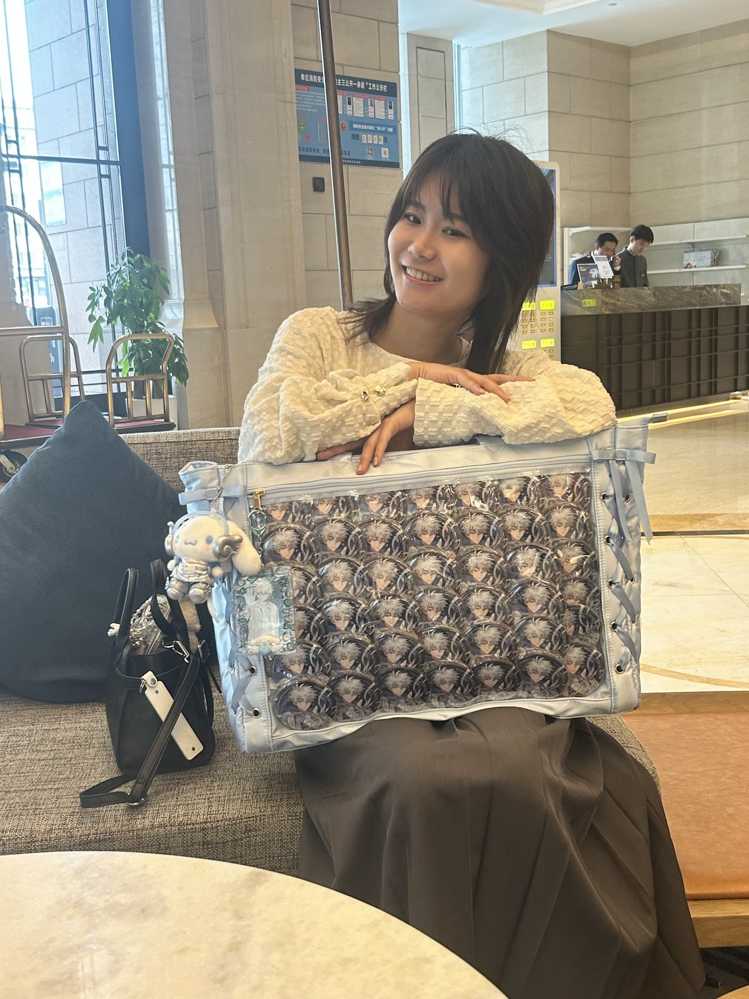
No 38·
— Arsenal display —
11:15 AM
ロビーで、武器庫公開。これから、補給ミッション。
在大堂进行军火展示,准备进货。
— Act II —
塔へ
青いレンズ越しに
透过蓝色镜片
PEARL
May 4
2026
No 39
— Dazzling afternoon —
11:36 AM
サングラスをかけて、
ちょっと、得意げ。
——東方明珠の足元、眩しい午後。
ちょっと、得意げ。
——東方明珠の足元、眩しい午後。
戴上墨镜,
有点小得意。
——东方明珠脚下,耀眼的午后。
有点小得意。
——东方明珠脚下,耀眼的午后。
届きたて、東方明珠
新到的东方明珠
No 40a
— 僕の世界だ —
11:51 AM
「これは——僕の世界だ！」
"这是——我的世界！"
No 40b
— 受領済 —
11:52 AM
「東方明珠、受領済。」
"东方明珠,本人已签收。"
❀
やっと、CHAGEE
终于,霸王茶姬
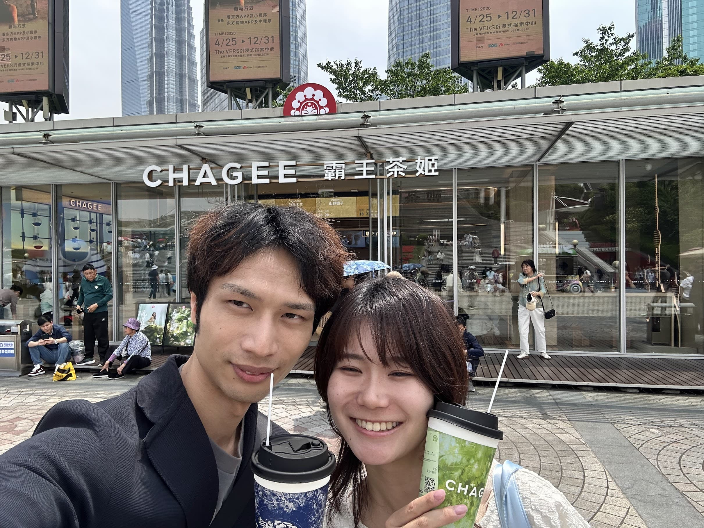
No 41
— 念願の一杯 —
11:57 AM
三日続けて、前を通っては、見送ってきた CHAGEE。
——今日、ようやく、念願の一杯。
笑顔とお茶、どっちが甘いか——分からない。
——今日、ようやく、念願の一杯。
笑顔とお茶、どっちが甘いか——分からない。
前几天,三过 CHAGEE 而不入。
——今天,终于喝上心心念念的茶姬。
也不知道,笑容和茶,哪个更甜。
——今天,终于喝上心心念念的茶姬。
也不知道,笑容和茶,哪个更甜。
12:00
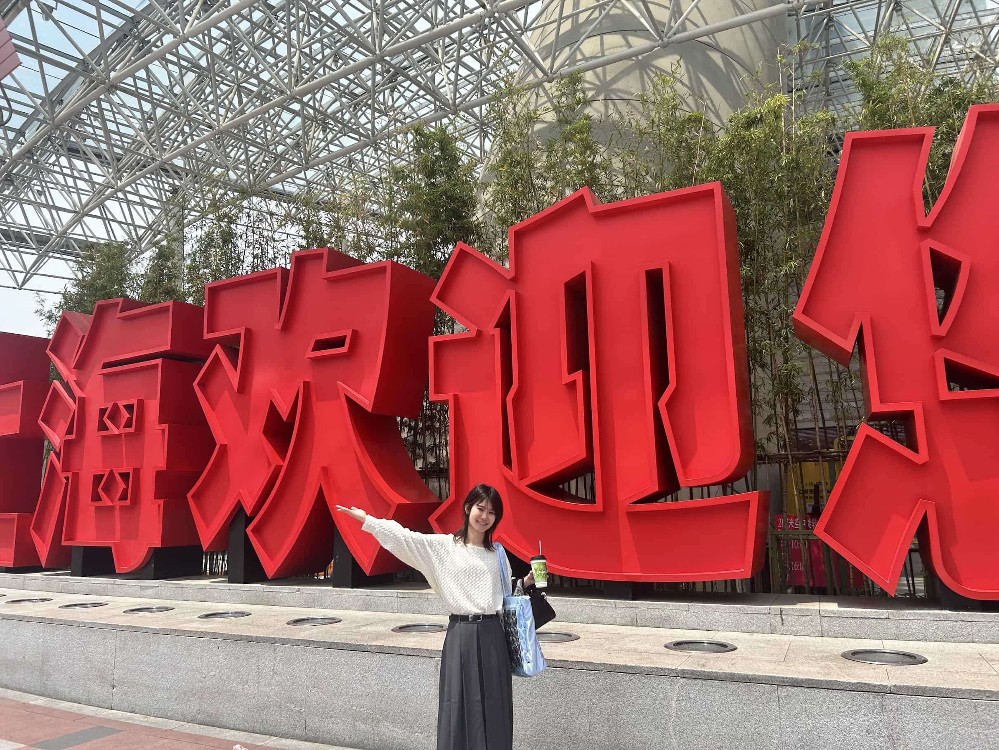
No 42
— Welcome, oversized —
12:00 PM
「ようこそ」、想像の三倍。
"欢迎"两个字,大概是想象的三倍大。
街の真上
城的正上方
SKY
263 M
2026
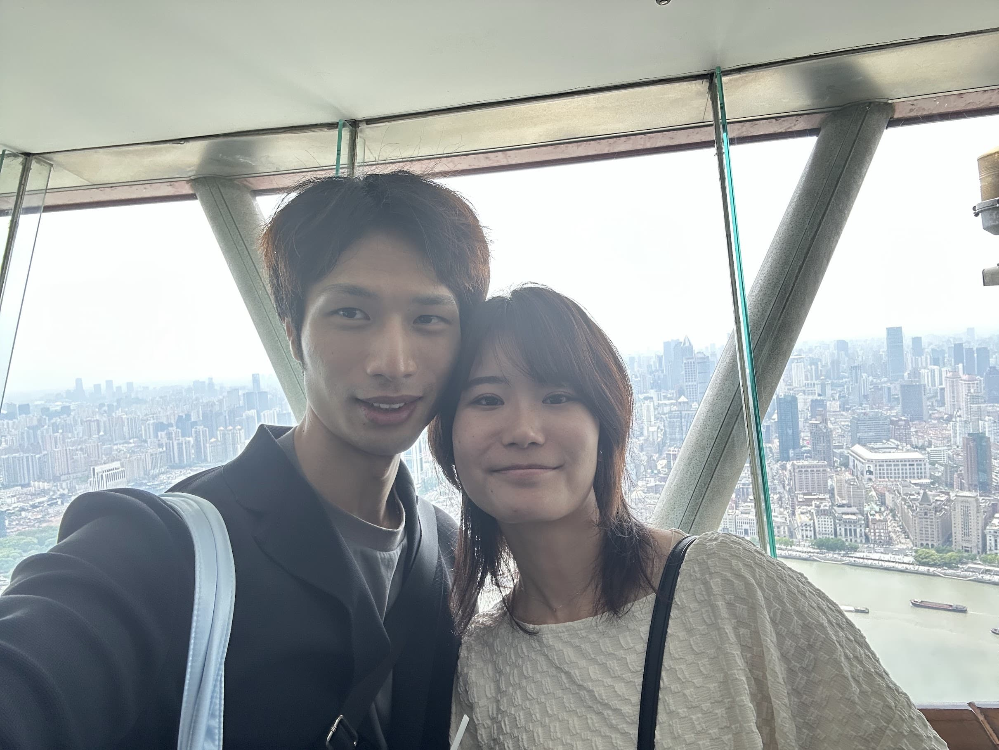
No 43
— Above the city —
12:38 PM
ガラス、街、川、船、雲。
——そして、こちらを向く、二人。
——そして、こちらを向く、二人。
玻璃,街,江,船,云。
——还有,转过头来的我们。
——还有,转过头来的我们。
12:45
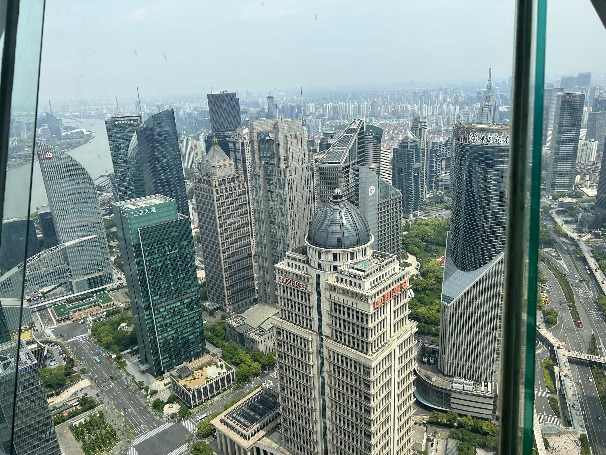
No 44
— Shanghai, from above —
12:45 PM
人も、車も、見えない大きさ。
人和车,小到看不见。
— Act III —
街へ
お昼へ、ぶらぶらと
朝着饭店,慢慢晃过去
No 45
— Looking for lunch —
1:34 PM
No 45·
— 道すがら —
1:38 PM
街を、ぶらぶら歩く。
——見上げると、ガラスのビル、ビル、ビル。
「上海、いいなあ」と、彼女が、ぽつり。
——お昼は、まだ決まっていない。
——見上げると、ガラスのビル、ビル、ビル。
「上海、いいなあ」と、彼女が、ぽつり。
——お昼は、まだ決まっていない。
在街上,慢慢晃。
——一抬头,玻璃楼,一栋,又一栋。
"上海,真好。"她,轻轻一句。
——午饭,还没想好。
——一抬头,玻璃楼,一栋,又一栋。
"上海,真好。"她,轻轻一句。
——午饭,还没想好。
上海、いいなあ
上 海, 真 好
✦
鏡ごしの、ハート
隔着镜子,比一个心
MIRROR
May 4
2026
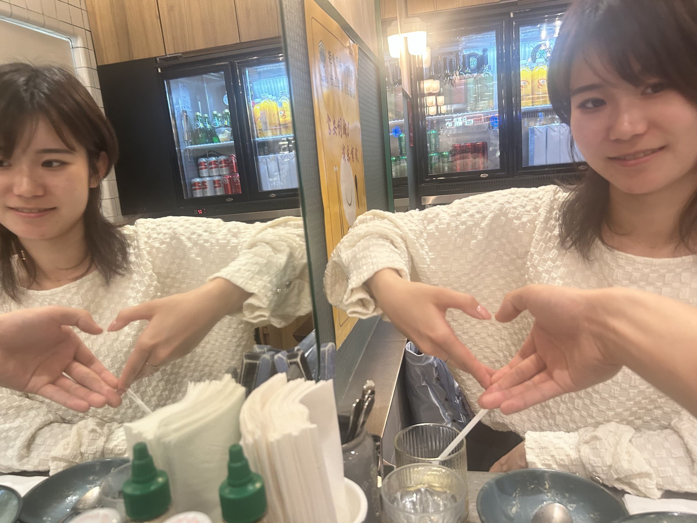
No 46
— Heart, in sync —
2:36 PM
鏡の前で、
指で、ちいさくハートを作る。
——あの日、噛み合わなかった指。
今日は、ちゃんと、合った。
指で、ちいさくハートを作る。
——あの日、噛み合わなかった指。
今日は、ちゃんと、合った。
在镜子前面,
用手指,轻轻比了个心。
——出发那天没对上的那个动作,
今天,刚刚好。
用手指,轻轻比了个心。
——出发那天没对上的那个动作,
今天,刚刚好。
15:06
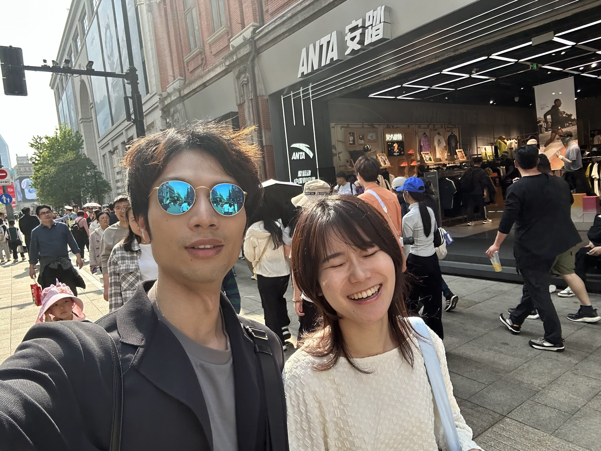
No 47
— Nanjing Rd, take 3 —
3:06 PM
なんで笑ってたんだっけ。
忘了是什么这么好笑了。
バカップル、いいじゃん
傻情侣,不挺好
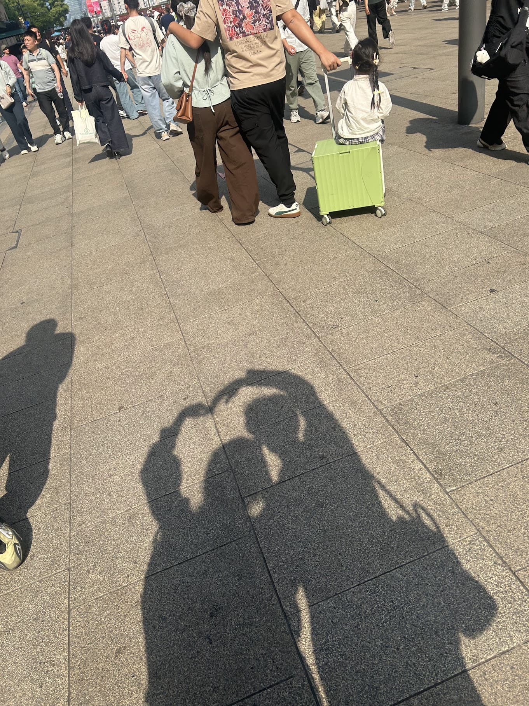
No 48
— バカップル、上等 —
3:10 PM
「日本語で、こういうの——
『バカップル』って言うんだよ」と、彼女。
——「ははっ、それも、いいじゃん」
『バカップル』って言うんだよ」と、彼女。
——「ははっ、それも、いいじゃん」
她说,日语里有个词,
专门形容我们这样的——『バカップル』。
——"哈哈,也挺好的呀。"
专门形容我们这样的——『バカップル』。
——"哈哈,也挺好的呀。"
バカップル、いいじゃん
傻 情 侣, 也 挺 好
✿
オタクの聖地巡礼
阿宅的圣地巡礼
OTAKU
May 4
2026
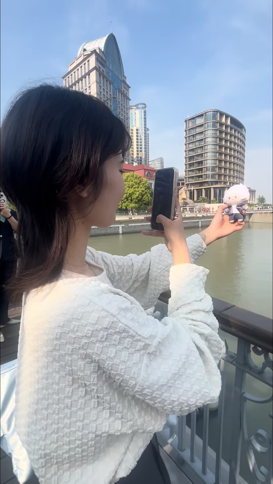
No 49
— 聖地、巡礼中 —
3:24 PM
「やばい、やばい——」
聖地に着いて、もう抑えきれない興奮。
左右に、シャッターを連発する彼女。
——誰が見ても、本物の"好き"、というやつ。
聖地に着いて、もう抑えきれない興奮。
左右に、シャッターを連発する彼女。
——誰が見ても、本物の"好き"、というやつ。
"やばい、やばい——"
到了圣地,她已经抑制不住兴奋,左右一顿拍。
——任谁看了也知道,这是真喜欢啊。
到了圣地,她已经抑制不住兴奋,左右一顿拍。
——任谁看了也知道,这是真喜欢啊。
名場面、再演
名场面再现
No 50
— 名場面、再演 —
3:39 PM
No 50·
— 次はロンドン —
3:40 PM
ロンドンに、どうしても行きたいなら——
僕が、ついていくよ。
僕が、ついていくよ。
如果你一定要去伦敦,
我会陪你一起去。
我会陪你一起去。
僕が、ついていくよ
我 会 陪 你 一 起 去
❀
16:07
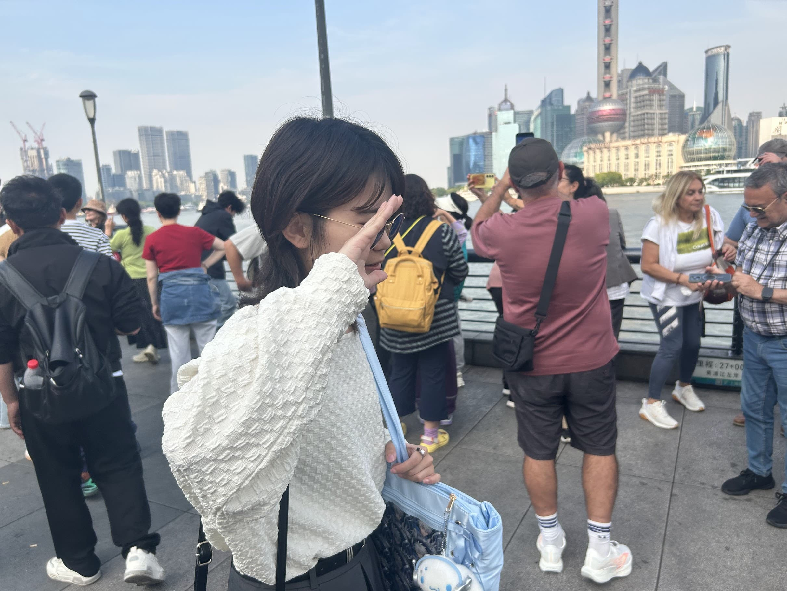
No 51
— Catching a star —
4:07 PM
はぐれた大スターを発見、急いでシャッター。
「ストップ、ストップ——」
「ストップ、ストップ——」
抓到一只落单的大明星,赶紧拍照,
"Stop,Stop——"
"Stop,Stop——"
— Act IV —
円卓へ、そして夜へ
☾
戦利品、両手いっぱい
战利品,满满两手
No 53
— 採購タイム —
5:25 PM
No 53·
— 大豊作 —
6:25 PM
店の中で、目がきらきら。
——財布の紐は、もう、ない。
一時間後、車の中。
袋を抱えた彼女の顔は、
——収穫を終えた、農夫みたいだった。
——財布の紐は、もう、ない。
一時間後、車の中。
袋を抱えた彼女の顔は、
——収穫を終えた、農夫みたいだった。
店里,她眼睛在发光。
——钱包早就管不住了。
一小时后,坐进车里。
抱着大包小包的她,
——像一个刚结束秋收的农夫。
——钱包早就管不住了。
一小时后,坐进车里。
抱着大包小包的她,
——像一个刚结束秋收的农夫。
友と、円卓を囲んで
和朋友,围着同一张桌
No 54
— 円卓、皿が回る —
7:07 PM
No 54·
— 五人、一枚 —
9:17 PM
二人だった旅に、
今夜だけ、四人が加わる。
——皿が回り、笑い声が回る。
隣の彼女が、いつもより少し、よく喋っている。
——「写真、撮ろうよ」
五人ぶんの笑顔が、一枚に収まった。
今夜だけ、四人が加わる。
——皿が回り、笑い声が回る。
隣の彼女が、いつもより少し、よく喋っている。
——「写真、撮ろうよ」
五人ぶんの笑顔が、一枚に収まった。
原本只是两个人的旅程,
今晚,多了四个人。
——盘子转,笑声也转。
身边的她,比平时话多了一点。
——"来,拍张合照吧。"
五个人的笑容,装进同一张照片里。
今晚,多了四个人。
——盘子转,笑声也转。
身边的她,比平时话多了一点。
——"来,拍张合照吧。"
五个人的笑容,装进同一张照片里。
22:49
No 55
— Full hands, full day —
10:49 PM
今日いちにちが、ぜんぶ詰まっているみたい。
好像把这一整天,都装进去了。
塔の見える、おやすみ
看着塔,说晚安
HOTEL
May 4
2026
No 56
— Good night, tower —
10:57 PM
窓の向こうに、明珠が、まだ光っている。
——「今日、長かったね」
「うん、いい長さだった」
明日のことは、また、明日。
——「今日、長かったね」
「うん、いい長さだった」
明日のことは、また、明日。
窗外,东方明珠还亮着。
——"今天好长啊。"
"嗯,长得刚刚好。"
明天的事,留给明天。
——"今天好长啊。"
"嗯,长得刚刚好。"
明天的事,留给明天。
— Day Four —
See You Again
また会う日まで
再见之日
May 5th · Tuesday
フルーツ天国と、お箸一膳
水果自由,与一双筷子
No 58
— もしもし、お箸を —
10:11 AM
No 58·
— 真剣、ライチ —
10:15 AM
ついに、フルーツ天国。仕入れ追加で——
——いや、お箸、もう一膳、追加で。
隣で、彼女は、真剣に、ライチを剥いている。
——いや、お箸、もう一膳、追加で。
隣で、彼女は、真剣に、ライチを剥いている。
终于水果自由了,给我加仓——
——欧不是,能加双筷子吗?
她在旁边,认真地剥着荔枝。
——欧不是,能加双筷子吗?
她在旁边,认真地剥着荔枝。
11:19
No 59
— Velvet elevator —
11:19 AM
ナイトクラブみたいなエレベーターで、下へ。
乘坐夜总会风格的电梯,下楼。
無敵に可愛い寝顔
无敌可爱的睡颜
TAXI
May 5
2026
No 60
— 無敵の寝顔 —
11:47 AM
後部座席。
シートベルトを締めた瞬間、
——もう、寝てる。
無敵に可愛い寝顔のまま、空港へ。
シートベルトを締めた瞬間、
——もう、寝てる。
無敵に可愛い寝顔のまま、空港へ。
后排座位。
安全带刚扣上,
——人就睡着了。
用一张无敌可爱的睡颜,赶去机场。
安全带刚扣上,
——人就睡着了。
用一张无敌可爱的睡颜,赶去机场。
空港の、たった一軒
机场里,只有一家
PVG
May 5
2026
No 61
— 意外と、おいしい —
1:22 PM
搭乗ゲートの近く、ぽつんと、一軒だけの食堂。
——選択肢、なし。
食べてみたら、意外にも、おいしい。
彼女、両手を広げて、「ね？」
——選択肢、なし。
食べてみたら、意外にも、おいしい。
彼女、両手を広げて、「ね？」
登机口附近,只有这么一家餐厅。
——别无选择。
一口下去——意外的好吃。
她两手一摊,"看吧?"
——别无选择。
一口下去——意外的好吃。
她两手一摊,"看吧?"
16:38
No 62
— Inflight stretches —
4:38 PM
機内、まさかの体操タイム。
——もうすぐ、東京。
——もうすぐ、東京。
飞机上,竟然有保健操。
——舒缓一下,一会儿就回到东京了。
——舒缓一下,一会儿就回到东京了。
— TO BE ADDED —
A Word from Her
りかから一言
(旅行記が完成したあと、彼女に一段書いてもらう場所)
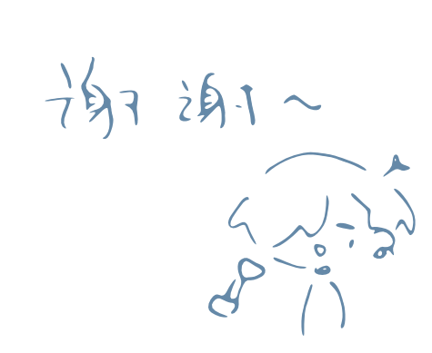